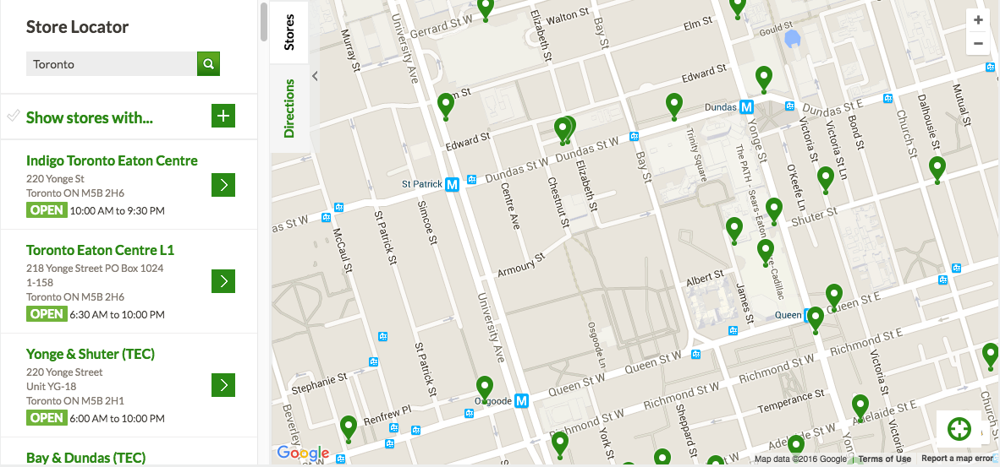
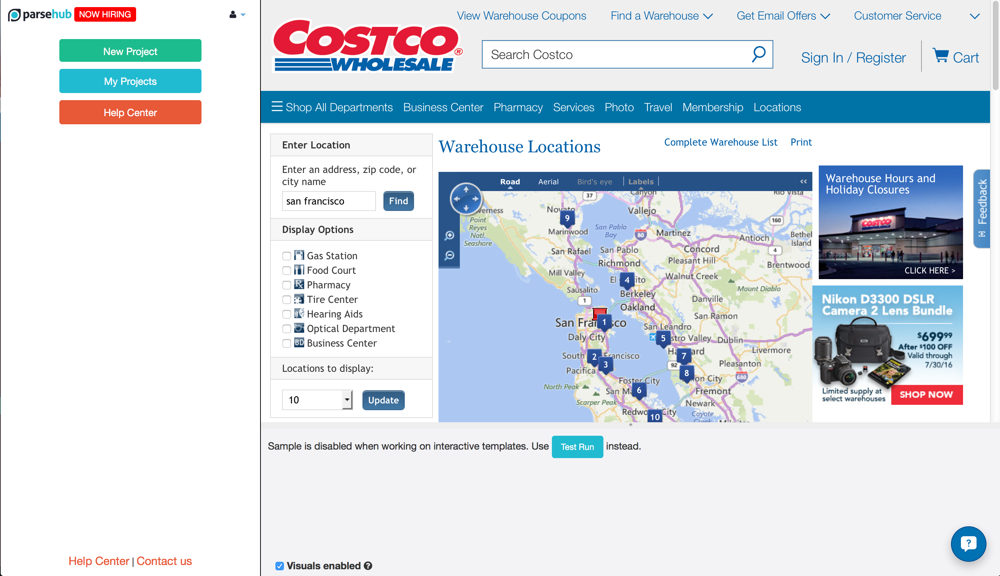
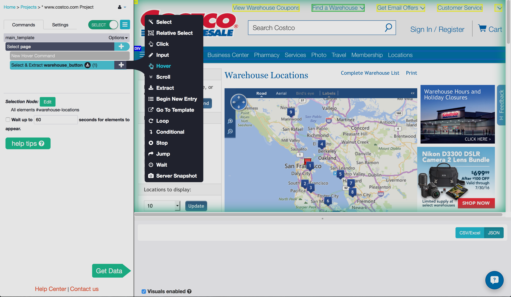
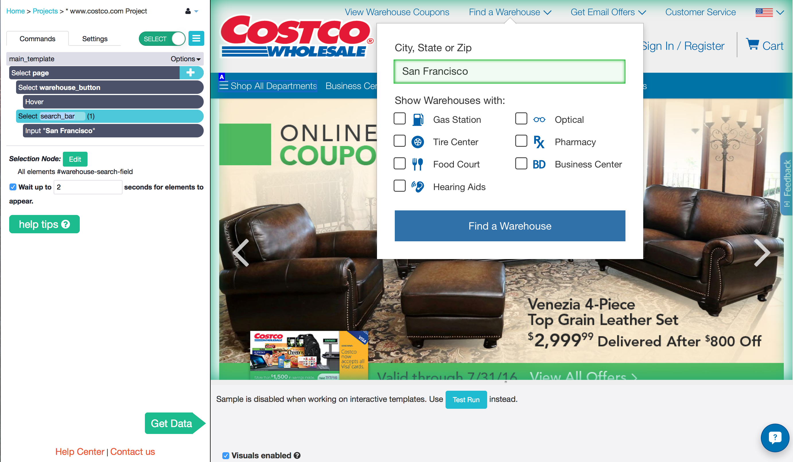
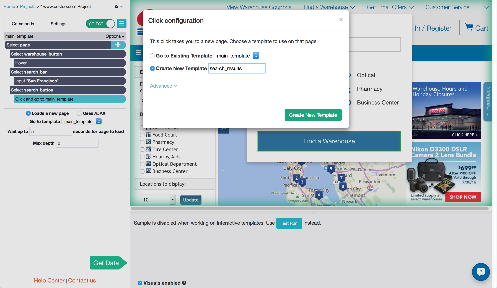
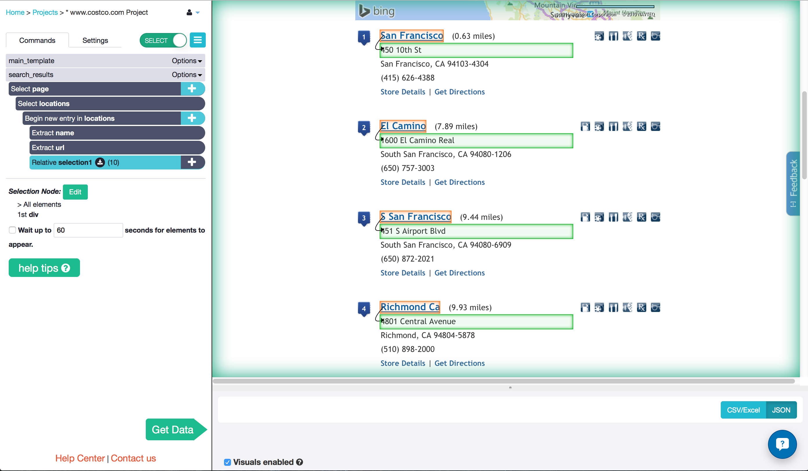
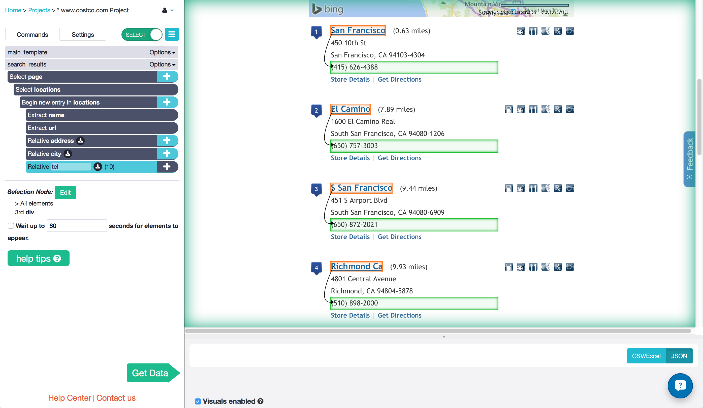
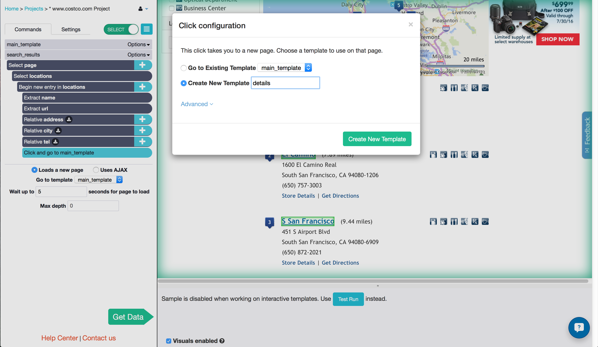
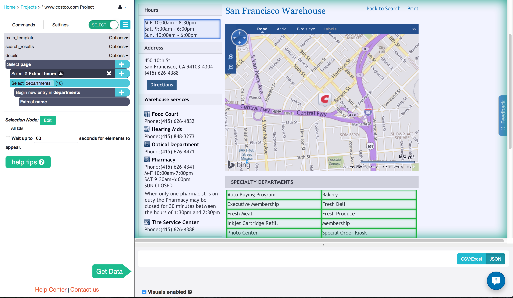
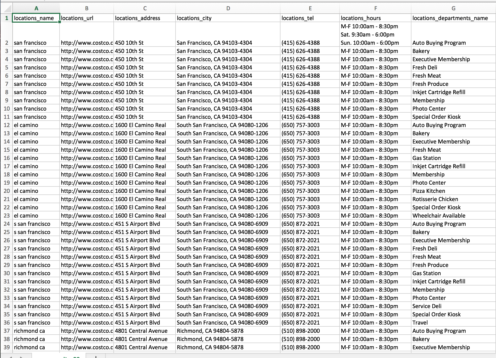

Most retail stores have a store locator map on their website. Customers use it to find their locations with just a quick search, but it is also used by distributors, wholesalers and other retailers to get information on their sales leads or their competitors.
If you have found yourself spending hours of your valuable time copying and pasting the addresses, phone numbers and store hours from these maps into your own database, then it is about time you discovered the power of web scraping. In this tutorial you will learn how to create a ParseHub data extraction project to automate this time consuming task - without writing a single line of code.

Implement web scraping into your business to:
- get your competitors locations to find out where to expand your business
- get the locations of businesses that you can distribute to
get contact info for all of the important businesses near yours

Step 1: Start your web scraping project
- ParseHub is a visual data extraction tool, meaning you get the data you want just by clicking on it, instead of learning to type in computer code. Download the desktop app to get started!
- Open the ParseHub application and travel to the retail store website of your choice. In this example, we will use http://www.costco.com/
Once you have traveled to the website, click on "New Project" and "Start project on this URL" to create your project.

Step 2: Searching for your location
- Now that you have created your web scraping project, you are ready to add the commands into your first template. Some templates are used to get data from a page, but this one will be used to search for that data. Click on the "Find a Warehouse" button to select it with the Select command.
- Rename your selection from selection1 to warehouse_button by clicking on the command.
- If you were using a regular browser to search, you would hover over this button without clicking to open a popup window. Luckily, you can command ParseHub to hover, the exact same way! You will see a "plus" button to the right of the command "Select and Extract warehouse_button". Click on it to open the command menu.
- Click on "Advanced" to open the rest of the commands.
Choose the Hover command from the list to add it to your template. The pop up window will open up.

- Add another Select command by clicking on the "plus" button next to the command "Select page".
- Click on the "City, State or Zip" search bar and an Input command will be added automatically.
- Type in your location into the input box. We will use San Francisco.
- Rename your selection search_bar.
When you run your project, you will want to make sure that the pop up window appears when ParseHub hovers over it. In order to do this, click on the "Select search_bar" command, and check the box that says "Wait up to 60 seconds for elements to appear", and change 60 to 2.

- Click on the "plus" button again to add another Select command.
- Click on the "Find a Warehouse" button to select it. Name it search_button.
- Click on the "plus" button beside "Select and Extract search_button" command to add a Click command from the menu.
Clicking on this button will take you to a new page. Therefore, we want to Create a New Template. Call it search_results.

Step 3: Extract data for 10 store locations
- You will be taken to a map with the 10 closest locations. Click on the first two in the list under the map. This will select and extract all 10 of them.
- Rename the selection locations. Click on the check box next to "Wait up to 2 seconds for elements to appear" since the website may take a while to search.
- Click the plus button next to "Begin new entry in locations.
- Add a Relative Select command from the command menu.
- Click on one of the names and then click on the address below it. This will select and extract all of the addresses.
Rename the selection address.

- Add another Relative Select command by clicking the "plus" button next to the "Begin new entry in locations" command. To select all of the the city and zip codes, click on the name of one location and then on the city and zip code below it.
Add another Relative Select and select the telephone numbers the same way.

Step 4: Scrape additional store details with page navigation
Clicking on the name of one of the locations will bring you to that store's additional details page, where you will find the store hours and a list of departments that it has.
- Click on the "plus" beside the "Begin new entry in locations" command, open the Advanced menu and add a Click command. By nesting this command in the Begin New Entry command, you are telling ParseHub to click on each one of the locations!
You will travel to a new page with each click, so Create New Template and call it details.

You will travel to the first details page in the list. I will first select the store hours, which are split up into three different lines. I don't want them to each get their own row in the CSV, so I will select all of them at once by zooming out by pressing "ctrl" (or "command") and "1" on my keyboard.
To select all of the department names, I click on one from each of the columns. This highlights them all, and selects and extracts them into separate rows in the CSV.

Step 5: Get data
So far I have instructed ParseHub to extract the address, phone number store hours and departments of each location near me. That's all the information that I need for my database, so it is time to run my project and extract my data!
There are a few ways to do this. You can run the project once and download your data from the app, you can schedule the project to run and download the data from an email, or you can control the projectusing ParseHub's API options with your own script. Here I will show you how to run the project once.
- Click on the big green "Get Data" button in the ParseHub side bar.
- Click "Run" and "Save and Run" and wait for the extraction to complete.
Download the CSV and the JSON. The results are also sent to my email address, and can be found on any computer with ParseHub's Desktop application when I log in to my account!

There are many ways that this project can be customized. A few examples are to:
- Use the dropdown menu on the search results page to get the info from 20 locations instead of just 10
- Select more data from the details page, which includes specific department phone numbers and hours
- Use regular expressions to extract only the Monday to Friday hours, and ignore the Saturday and Sunday hours
And, of course, this isn't limited to the Costco website. Just about all major retailers have store locators designed just like this one. If you use ParseHub to extract locations from maps, let us know which stores in the comments below!
What do you use ParseHub for? Share in the comments below or in a personal email, at quentin[at]parsehub[dot]com. We are always being surprised by the different ways people use web scraping in their daily life!